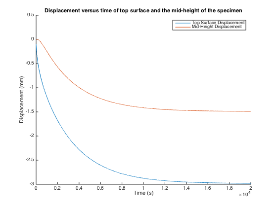
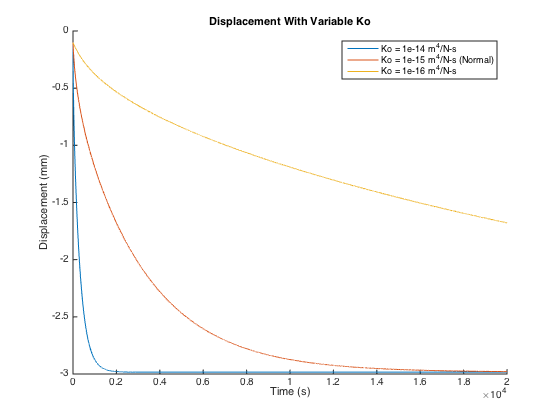
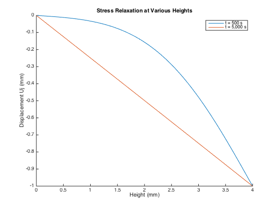
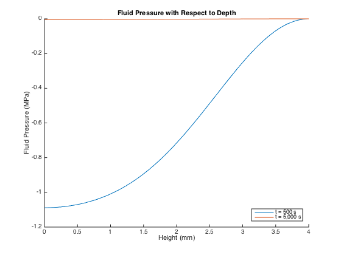

Contents
clc, clear all
r = 4;
h = 4;
area = pi*r^2;
Ha = 2;
orig_Ko = 1e-15;
Ko = orig_Ko*(1e12);
Part A.
disp(['Part A:'])
F = 75;
stressApp = F/area;
interval = 20000;
time = 0:interval;
strt = 0;
estMax = 5;
Xjt = h;
[ut_a] = linearBiphasicModelCreep(time, h, stressApp, Ha, Ko, strt, Xjt, estMax);
Xjm = h/2;
[um_a] = linearBiphasicModelCreep(time, h, stressApp, Ha, Ko, strt, Xjm, estMax);
figure, hold all, plot(time, ut_a), plot(time, um_a)
xlabel('Time (s)'), ylabel('Displacement (mm)'), title('Displacement versus time of top surface and the mid-height of the specimen'), legend('Top Surface Displacement','Mid-Height Displacement')
t_eval = 500;
FiveHundredComp = ut_a(t_eval) / um_a(t_eval);
if (FiveHundredComp == 2)
disp('As expected in a uniform material, the displacement of the top is twice the displacement at the mid-height.')
else
disp(['The displacement of the top surface is NOT twice the displacement at the mid-height.' 10 'This means that the material is not uniform. The actual displacement comparison is a factor of ' num2str(FiveHundredComp)])
end
Part A:
The displacement of the top surface is NOT twice the displacement at the mid-height.
This means that the material is not uniform. The actual displacement comparison is a factor of 11.2626

Part B.
disp([10 'Part B:'])
Ko_b = [Ko*10, Ko, Ko/10];
figure, hold all
for i = 1:length(Ko_b)
[uj] = linearBiphasicModelCreep(time, h, stressApp, Ha, Ko_b(i), strt, Xjt, estMax);
plot(time, uj)
end
xlabel('Time (s)'), ylabel('Displacement (mm)'), title('Displacement With Variable Ko'), legend('Ko = 1e-14 m^4/N-s','Ko = 1e-15 m^4/N-s (Normal)','Ko = 1e-16 m^4/N-s')
disp(['The larger the K0 value, the faster the tissue deforms, as seen on the graph. K0 represents fluid permeability, ' 10 'which determines how closely the tissue resembles a dashpot. The closer K0 is to 0, the faster the fluid ' 10 'permeates the tissue and the faster the tissue compresses. This means that a K0 value of 0 would resemble ' 10 'a perfect dashpot with no fluid permeability, while a K0 closer to 1 would more closely represent a spring.'])
Part B:
The larger the K0 value, the faster the tissue deforms, as seen on the graph. K0 represents fluid permeability,
which determines how closely the tissue resembles a dashpot. The closer K0 is to 0, the faster the fluid
permeates the tissue and the faster the tissue compresses. This means that a K0 value of 0 would resemble
a perfect dashpot with no fluid permeability, while a K0 closer to 1 would more closely represent a spring.

Part C.
disp([10 'Part C:'])
t0 = 2;
t = [500, 5000];
vo = 1/t0;
strt = 1;
figure, hold all
for i = 1:length(t)
[uj, Xj] = linearBiphasicModelRelax(t0, t(i), vo, h, Ha, Ko, strt, estMax);
plot(Xj, uj)
uj_c(i, :) = uj; Xj_c(i, :) = Xj;
end
xlabel('Height (mm)'), ylabel('Displacement Uj (mm)'), title(['Stress Relaxation at Various Heights']), legend('t = 500 s', 't = 5,000 s')
disp(['The material has reached equilibrium at 5,000 s because the slope is constant meaning that the displacement' 10 'is evenly shared between each section of the material. Over time, the displacement in the top section has ' 10 'evenly distributed throughout the material. Whereas at t = 500 s, the displacement is disproportionately ' 10 'limited to only the top section.'])
Part C:
The material has reached equilibrium at 5,000 s because the slope is constant meaning that the displacement
is evenly shared between each section of the material. Over time, the displacement in the top section has
evenly distributed throughout the material. Whereas at t = 500 s, the displacement is disproportionately
limited to only the top section.

Part D.
disp([10 'Part D:' 10 'The predicted stress that would be measured at the top of the specimen at: '])
for i = 1:length(t)
du_t = uj_c(i, end) - uj_c(i, end-1);
dx_t = Xj_c(i, end) - Xj_c(i, end-1);
stressApp_td(i) = Ha*(du_t/dx_t);
disp(['t = ' num2str(t(i)) 's is ' num2str(stressApp_td(i)) ' MPa'])
end
figure, hold all
for i = 1:length(t)
for j = 2:length(uj_c)
du_m(i, j) = uj_c(i, j) - uj_c(i, j-1);
dx_m(i, j) = Xj_c(i, j) - Xj_c(i, j-1);
stressApp_d(i) = Ha*(du_m(i, j)/dx_m(i, j));
fluidPress(i, j) = stressApp_td(i) - stressApp_d(i);
end
plot(Xj_c(i, 2:end), fluidPress(i, 2:end))
xlabel('Height (mm)'), ylabel('Fluid Pressure (MPa)'), title(['Fluid Pressure with Respect to Depth'])
end
legend('t = 500 s', 't = 5,000 s', 'location', 'SouthEast')
Part D:
The predicted stress that would be measured at the top of the specimen at:
t = 500s is -1.1295 MPa
t = 5000s is -0.5021 MPa
